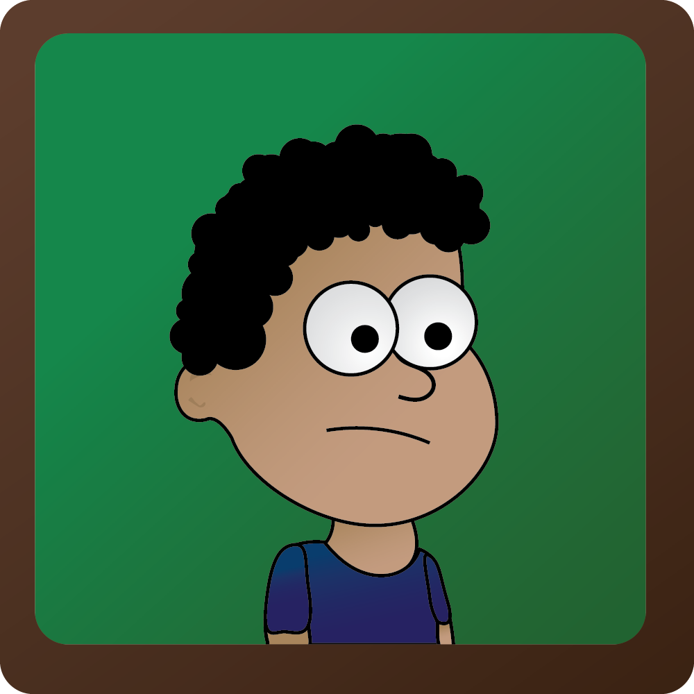

Images

In this self portrait, the art style was inspired by things I enjoyed as a child like Gravity Falls, Poptropica and Diary of the Wimpy Kid. They represent me cause they were a huge impact on my childhood growing up. I added a lot of gradients to add some shadows and light. One issue I faced was that the bottom of the portrait went over the margin I wanted to have. I solved this by adding A brown border, which not only cover the bottom but also gave the appliance of a picture frame.